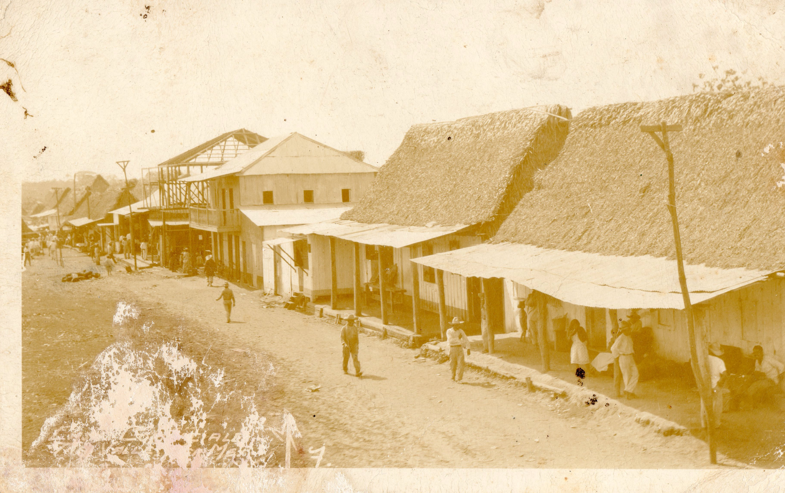

<

De 1920 a 2025, tres valles ha experimentado un notable cambio, pasando de un poblado pequeño y relativamente aislado a un municipio con mayor infraestructura y desarrollo, aunque manteniendo su carácter rural. los cambios principales de tres valles Creación de un plan municipal de desarrollo el gobierno de tres valles un plan de desarrollo que define las metas y estrategia para un futuro mejor. Se menciona esfuerzos para formentar el turismo,la agricultura y otros sectores economicos para generar empleos y desarrollo.